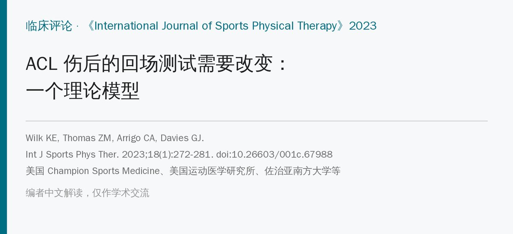
🔖原文信息（编者中文重排）
📚 文献信息
▪ Wilk KE, Thomas ZM, Arrigo CA, Davies GJ. The Need To Change Return to Play Testing in Athletes Following ACL Injury: A Theoretical Model. International Journal of Sports Physical Therapy. 2023;18(1):272-281. doi:10.26603/001c.67988
▪ 作者单位：美国 Champion Sports Medicine（Select Medical）、美国运动医学研究所、Advanced Rehabilitation、佐治亚南方大学物理治疗系等
▪ 文章类型：临床评论 / 当前概念综述（作者临床经验，没有收集数据）
美国每年约 20 万～25 万例 ACL 损伤、15 万～16.5 万台 ACL 手术，青少年运动员的发生率还在上升。更麻烦的是再损伤：有研究报告 ACL 术后再损伤率高达 30%～39%，可能是同侧移植物断裂，也可能是对侧 ACL 断裂。
作者认为，降低再损伤最直接的一环是改进回场（return to play）测试。
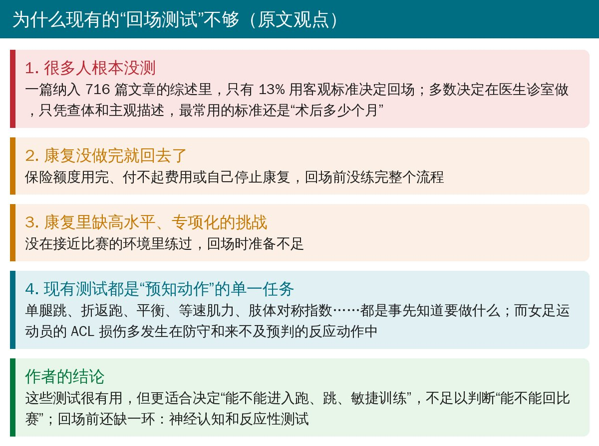
🔖为什么现有回场测试不够（编者根据原文整理）
作者的核心观点：单腿跳、折返跑、平衡、等速肌力这些测试都是事先知道要做什么动作，测的是“预知动作”。而比赛里的 ACL 损伤，常发生在来不及预判的反应动作中——防守、躲人、球突然变向。所以这些测试更适合用来判断能否进入跑、跳、敏捷训练，而不是能否回比赛。
做反应性测试之前，运动员要先通过一系列基础指标。原文表 1（中文翻译，LSI＝肢体对称指数，健侧对比）：
| 评估项目 | 评估方法 | 达标标准 |
|---|---|---|
| 疼痛 | 视觉模拟评分 / 数字评分 | 治疗性训练中和训练后 <3 分 |
| 恐动 / 心理准备 | ACL-RSI 量表 | >55 分 |
| 姿势 | 姿势网格 | 对称 / 正常 |
| 步态、跑步、动作分析 | 定性分析 | 正常 |
| 膝关节积液 | 围度测量 / 擦浮试验 | 与健侧差 <1 cm |
| 患者自评结局（原文表格此行写“触诊”） | 触诊 | 无疼痛主诉 |
| 平衡 / 本体感觉 | 静态、动态 | 正常 / 对称 |
| 主动、被动活动度 | 量角器、电子量角器、终末感 | 两侧差 <10% |
| 韧带稳定性 | Lachman 试验、轴移试验 | 均阴性 |
| 全下肢肌力（核心、髋、膝、踝） | 手持测力计、等速测试 | 两侧差 <10%，参照体重百分比和常模 |
| 全下肢爆发力 | 手持测力计、等速、测力台 | 同上，另看力量发展速率 |
| 全下肢肌耐力 | 等速、测力台 | 同上 |
| 功能测试 | 纵跳、单腿跳、T 形单腿跳、侧向变向、LEFT 测试 | 两侧差 <10%，参照身高百分比和常模 |
原文表 1：进入反应性测试前的准入标准（中文翻译）
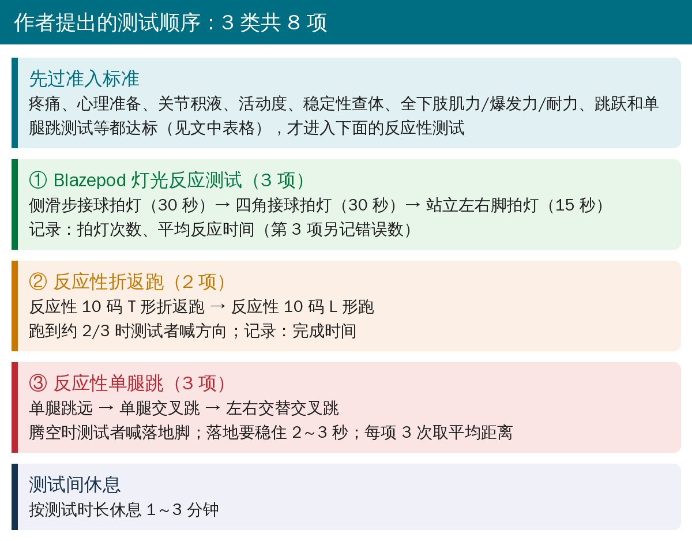
🔖测试顺序总览（编者根据原文整理）
按顺序做：3 项 Blazepod 灯光测试 → 2 项反应性折返跑 → 3 项反应性单腿跳，项目之间按时长休息 1～3 分钟。Blazepod 是一种无线感应灯，被拍一下就熄灭，并随机点亮下一个。
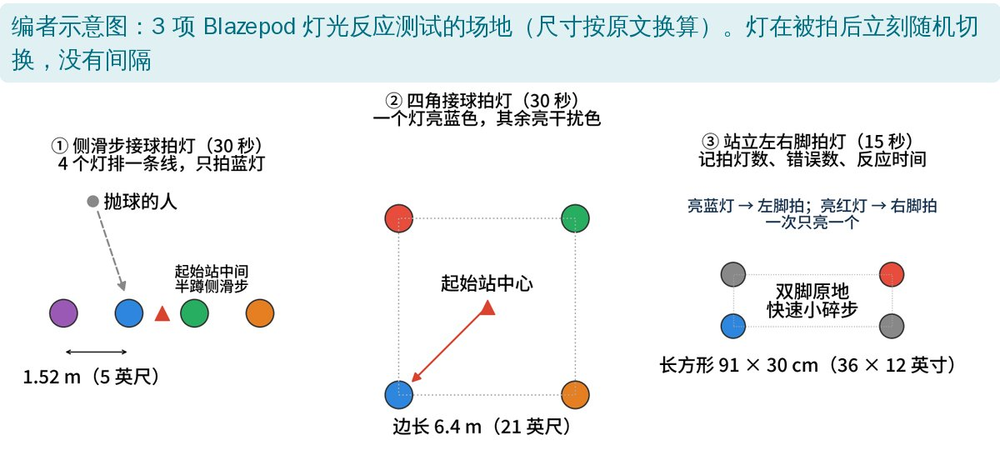
🔖3 项灯光测试的场地（编者示意图）
• 侧滑步接球拍灯：4 个灯排成一条线、间隔 1.52 m（5 英尺），一个亮蓝色（目标），其余 3 个亮紫、绿、橙、红、黄等干扰色。运动员从中间出发，保持半蹲运动姿势侧滑步，不许跳或跑；同伴把足球抛向蓝灯，运动员要接球、拍灯、把球抛回，同时找下一个蓝灯。30 秒内拍越多越好，记录拍灯次数和平均反应时间
• 四角接球拍灯：4 个灯摆成边长 6.4 m（21 英尺）的正方形，从中心出发，规则同上，30 秒
• 站立左右脚拍灯：4 个灯摆成 91 × 30 cm 的长方形，运动员站在中间原地快速小碎步。亮蓝灯用左脚拍，亮红灯用右脚拍，15 秒内拍越多越好，另记错误次数
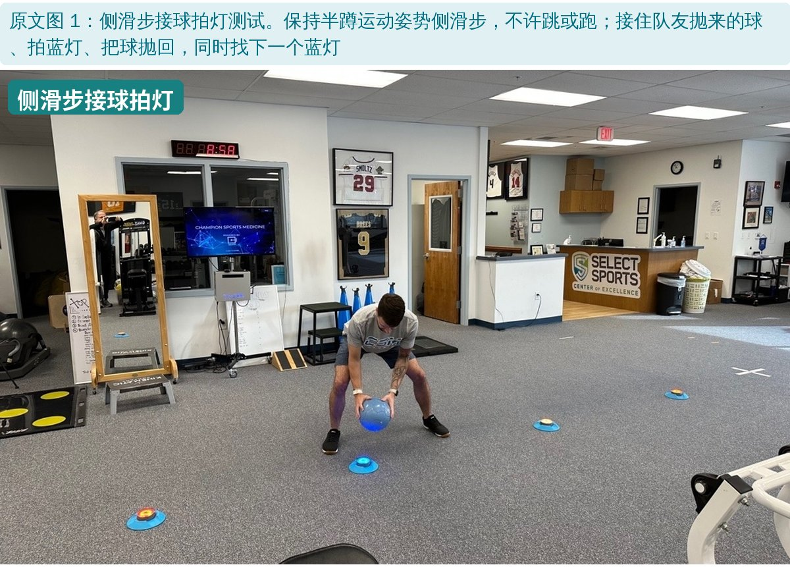
🔖原文图 1：侧滑步接球拍灯
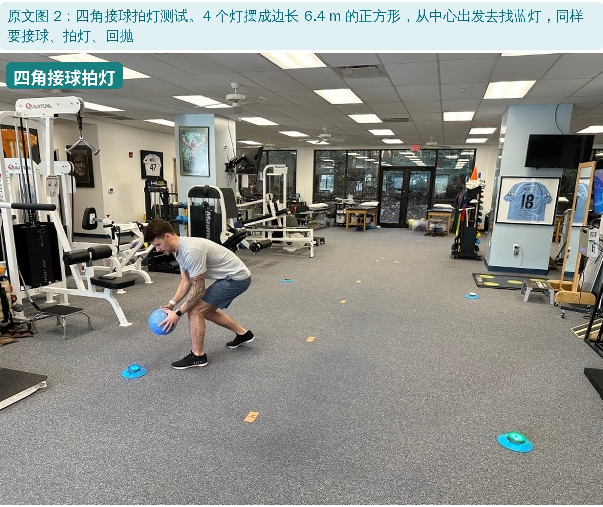
🔖原文图 2：四角接球拍灯
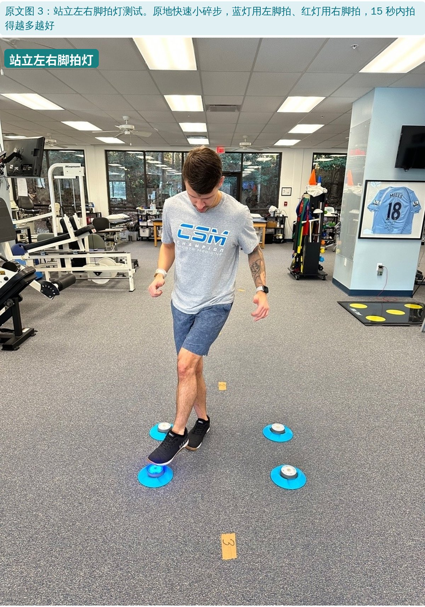
🔖原文图 3：站立左右脚拍灯
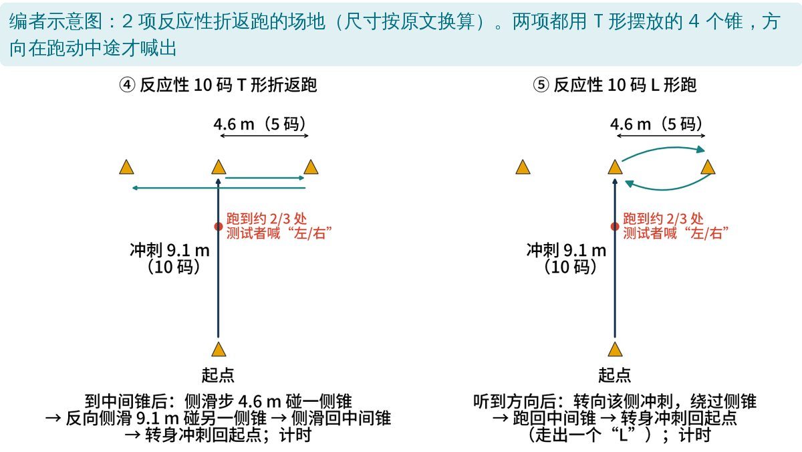
🔖2 项折返跑的场地（编者示意图）
• 反应性 10 码 T 形折返跑：4 个锥摆成 T 形，起点锥距中间锥 9.1 m（10 码），中间锥两侧各 4.6 m（5 码）有一个锥。运动员冲向中间锥，跑到约 2/3 处时测试者才喊“左”或“右”；按口令方向侧滑步到一侧锥，再反向侧滑到另一侧锥，回到中间锥，转身冲回起点。计时
• 反应性 10 码 L 形跑：同样的 T 形摆放，跑到约 2/3 处听方向，转向该侧冲刺绕过侧锥，跑回中间锥，再转身冲回起点。计时
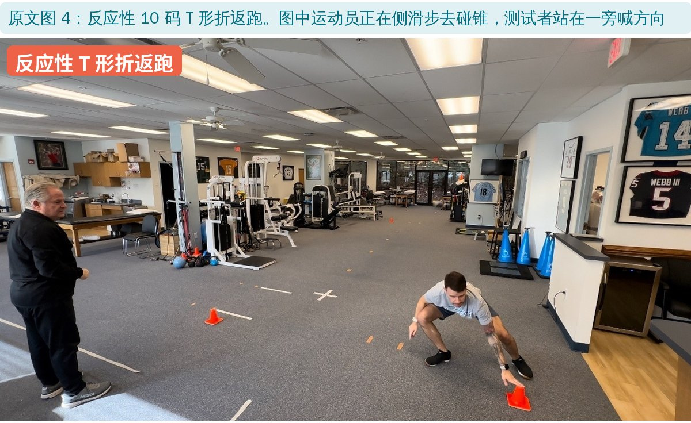
🔖原文图 4：反应性 T 形折返跑
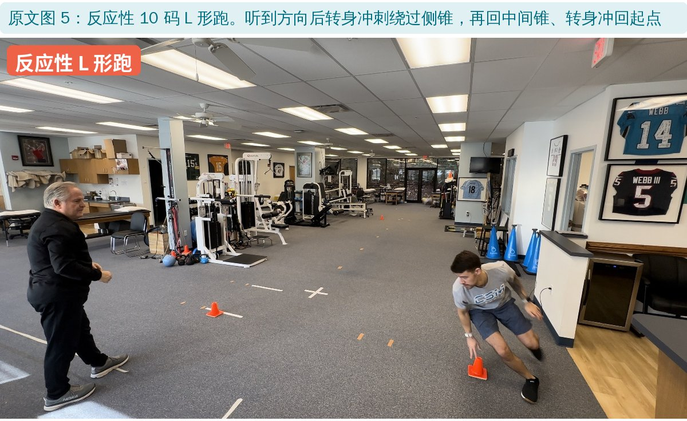
🔖原文图 5：反应性 L 形跑
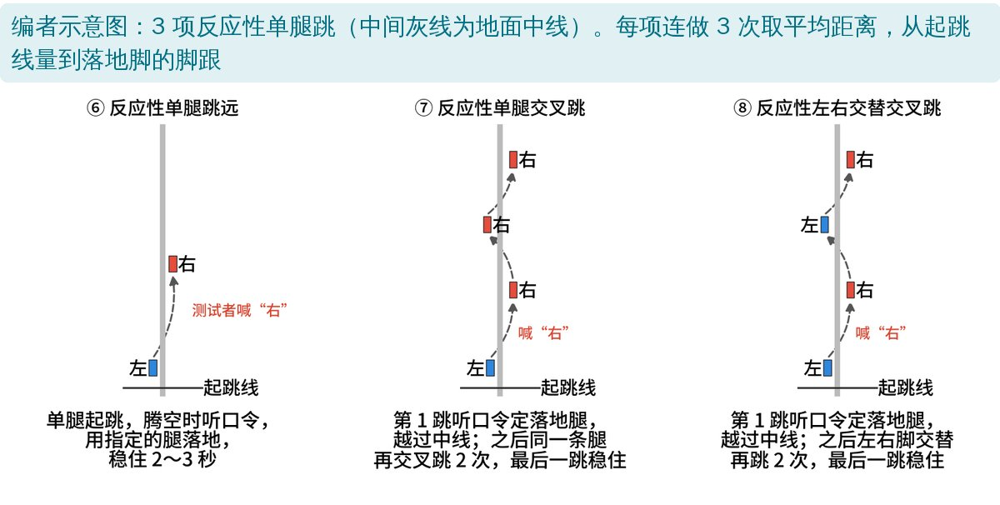
🔖3 项反应性单腿跳（编者示意图）
• 反应性单腿跳远：单腿站立尽力向前跳，腾空时测试者才喊用哪条腿落地，落地要稳住 2～3 秒才算数
• 反应性单腿交叉跳：第 1 跳腾空时听口令决定落地腿，并越过地面中线；之后用同一条腿再左右交叉跳 2 次，最后一跳稳住
• 反应性左右交替交叉跳：第 1 跳同上；之后左右脚交替再跳 2 次，最后一跳稳住
• 每项连做 3 次取平均距离，从起跳线量到落地脚的脚跟
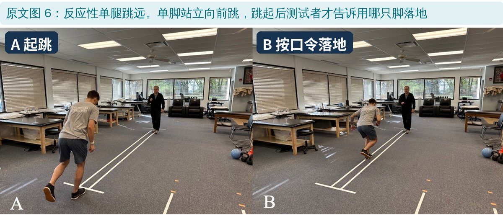
🔖原文图 6：反应性单腿跳远
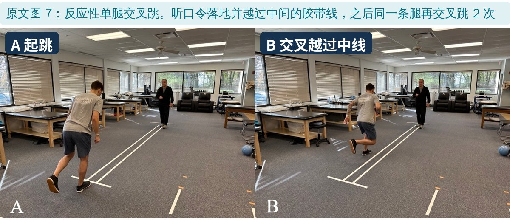
🔖原文图 7：反应性单腿交叉跳
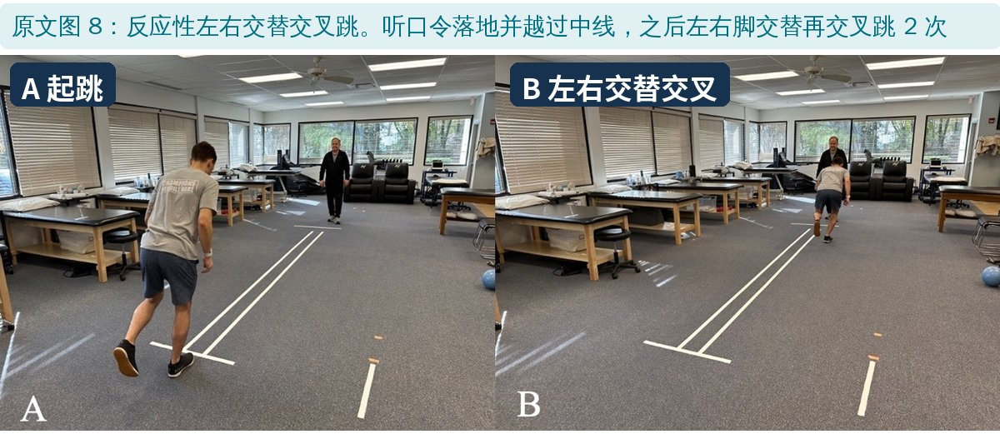
🔖原文图 8：反应性左右交替交叉跳
原文附有这些测试的视频（谷歌网盘链接），国内可能无法直接打开。
• 这是一个“理论模型”，没有数据：作者自己承认，这 8 项测试没有做过信度、效度检验，也没有证明能预测回场表现或降低再损伤。摘要里“可能降低再损伤率”只是推测
• 没有标准值：文章只告诉你记录拍灯次数、反应时间、完成时间和距离，没给“多少算过关”，也没说是否和健侧或术前基线比（单腿跳类可以算两侧对称指数，灯光和折返跑没法）
• 方向是对的：把不可预知的反应和双重任务加进回场测试，和近年的神经认知康复研究一致；同一团队后来的 Part 1、Part 2 系列文章把这类训练写进了康复方案
• 设备门槛：Blazepod 需要专门的感应灯，另外 5 项（折返跑、单腿跳）只要锥桶、胶带和一个喊口令的人，基层也能做
• 作者团队来自美国运动医学康复机构，Blazepod 是商业产品，原文没有利益冲突声明，也没说明为什么选这个品牌
• 再损伤率换算：正文说再损伤率 30%～39%，“相当于每 10 台手术就有 4 台是再损伤”——39% 才接近 4/10，而且“再损伤率”和“手术中再损伤占比”不是一回事
• 表 1 量表和文献不一致：“恐动”一栏写用 ACL-RSI（重返运动心理准备量表）、>55 分，但引用的文献 24 是 Tampa 恐动量表（TSK）
• 表 1 有一行错位：患者自评结局（PROs）的评估方法写成“触诊”、标准写“无疼痛主诉”，像是错行
• 缩写不一致：正文列表写“Total Leg Strength（TLS）”，表 1 写“Total Leg Strength-TAS”
• 积液标准：擦浮试验是分级判断，表 1 却和围度测量一起写“与健侧差 <1 cm”
• T 形折返跑距离：正文是侧滑 5 码→反向 10 码→回 5 码，图 4 图注却写“一侧 5 码再反向 5 码”
• L 形跑：正文说锥摆成 T 形、“绕过远端锥再跑回中间锥”，图 5 图注写“转向 5 码后转身回起点”，两处路线描述不同
• 站立左右脚拍灯：正文写灯摆成 36 × 12 英寸的长方形，图 3 图注写“目标相隔 3 英尺”（只对得上长边）
• 小错：“returning to the result inadequately prepared”（应为 returning to sport）
• “过了单腿跳”≠“可以回比赛”：传统测试仍然要做，但把它当作进入跑、跳、敏捷阶段的门槛，回场前再加一层反应性测试
• 最容易落地的改法：在你已经在做的单腿跳和折返跑里，让运动员腾空或跑动途中才知道方向/落地腿，几乎不增加设备
• 先达标再上反应性测试：疼痛、积液、活动度、肌力对称（两侧差 <10%）、心理准备等先过关，避免在基础不够时做高风险的变向和单腿落地
• 记录自己的数据：没有常模时，可以记录健侧、术前或队友的数据作对照，逐步建立自己机构的参考值
• 这套测试目前只是作者的临床经验，回场决定仍要结合时间（一般不早于术后 9 个月）、多项客观测试和团队讨论
欢迎关注骨科康复小黄公众号，获取更多物理治疗的专业知识！
📄参考文献：
Wilk KE, Thomas ZM, Arrigo CA, Davies GJ. The Need To Change Return to Play Testing in Athletes Following ACL Injury: A Theoretical Model. Int J Sports Phys Ther. 2023;18(1):272-281. doi:10.26603/001c.67988
原文以 CC BY-NC 4.0 协议开放获取，版权归原作者所有。本文为非商业的学术交流中文解读：原文图 1～8 引自原文，图中中文标签为编者所加；场地示意图和要点卡由编者根据原文绘制、整理，表格为中文翻译。仅供学习交流，如有侵权请联系删除。